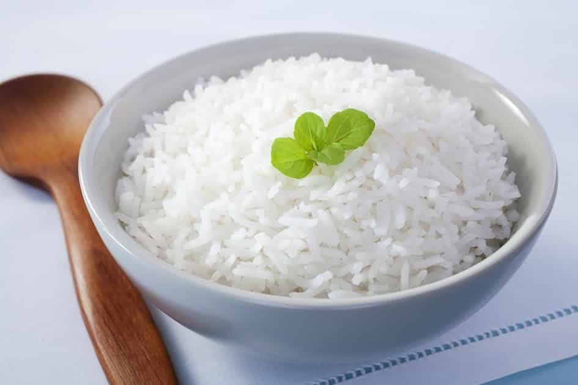

Arroz
Na parboilização, o arroz ainda em casca é mergulhado em água potável aquecida e, posteriormente, segue para a etapa de autoclave.
Nela, os grãos são vaporizados e, sob pressão, o amido presente neles incha (ou se gelatiniza). Dessa forma, o grão se torna amorfo, com um uma estrutura interior não tão sólida.

INGREDIENTES
- 1 colher (sopa) de azeite
- ½ cebola
- 1 xícara (chá) de arroz
- 2 xícaras (chá) de água
- ½ colher (chá) de sal
MODO DE PREPARO
- Descasque e pique fino a cebola. Numa chaleira, leve um pouco mais de 2 xícaras (chá) de água ao fogo baixo, até ferver.
- Leve uma panela média ao fogo baixo. Quando aquecer, regue com o azeite e acrescente a cebola. Tempere com uma pitada de sal e refogue por cerca de 2 minutos, até murchar. Junte o louro e misture bem.
- Acrescente o arroz e mexa bem para envolver todos os grãos com o azeite por cerca de 1 minuto – isso ajuda a deixar o arroz soltinho depois de cozido.
-
- Meça 2 xícaras (chá) da água fervente e regue o arroz. Tempere com o sal, misture bem e aumente o fogo para médio, não mexa mais.
- Assim que a água atingir o mesmo nível do arroz, diminua o fogo e tampe parcialmente a panela. Deixe cozinhar até que o arroz absorva toda a água – para verificar se a água secou, fure o arroz com um garfo e afaste delicadamente alguns grãos do fundo da panela; se ainda estiver molhado, deixe cozinhar mais um pouquinho.
- Desligue o fogo e mantenha a panela tampada por 5 minutos antes de servir para que os grãos terminem de cozinhar no próprio vapor. Em seguida, solte os grãos com um garfo, transfira para uma tigela e sirva quente.
SEM DESPERDÍCIO
- Pode congelar as sobras. Depois, use o micro-ondas para descongelar. Interrompa a cada minuto para soltar os grãos com um garfo até descongelar completamente. Para a receita de arroz frito, ele vai direto (congelado mesmo) para a frigideira.
Validade – 3 meses